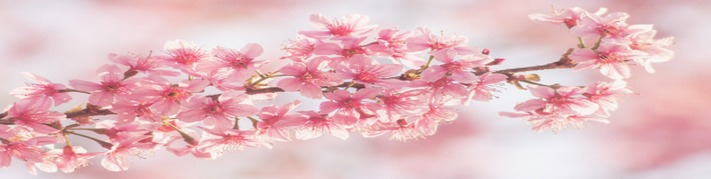
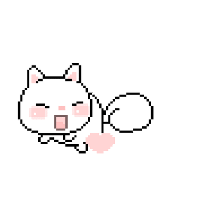
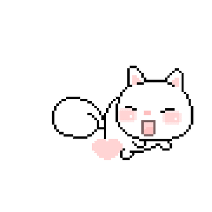
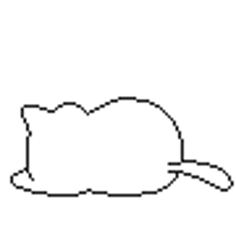

Diana Oliveira
❀
Passatempos:
Escrever ❀
Ouvir música ❀
Estar com as Chinchis *-* ❀
Jogar CS ❀

☙ Escrever é um Hobby meu desde pequena ❧
☙ Continua na hiperligação (
❀
) ❧

☙ Os meus gostos de música são variados, mas se tivesse que escolher um seria NightCore ❧
☙ Sou uma mãe orgulhosa de 2 bolinhas de pêlo, Bella e Lua ❧
☙ Jogo CS (Counter-Strike) à mais de 1 ano ❧
☙ Continua na hiperligação (
❀
) ❧
❀
❀
❀❀❀

❀